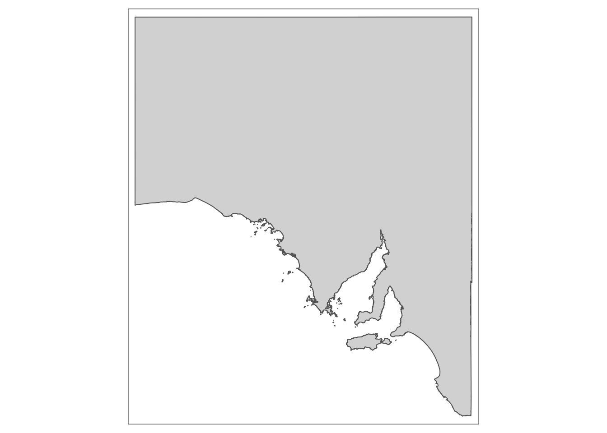
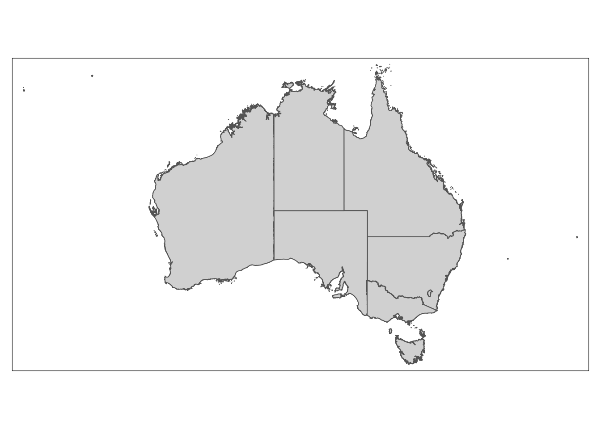
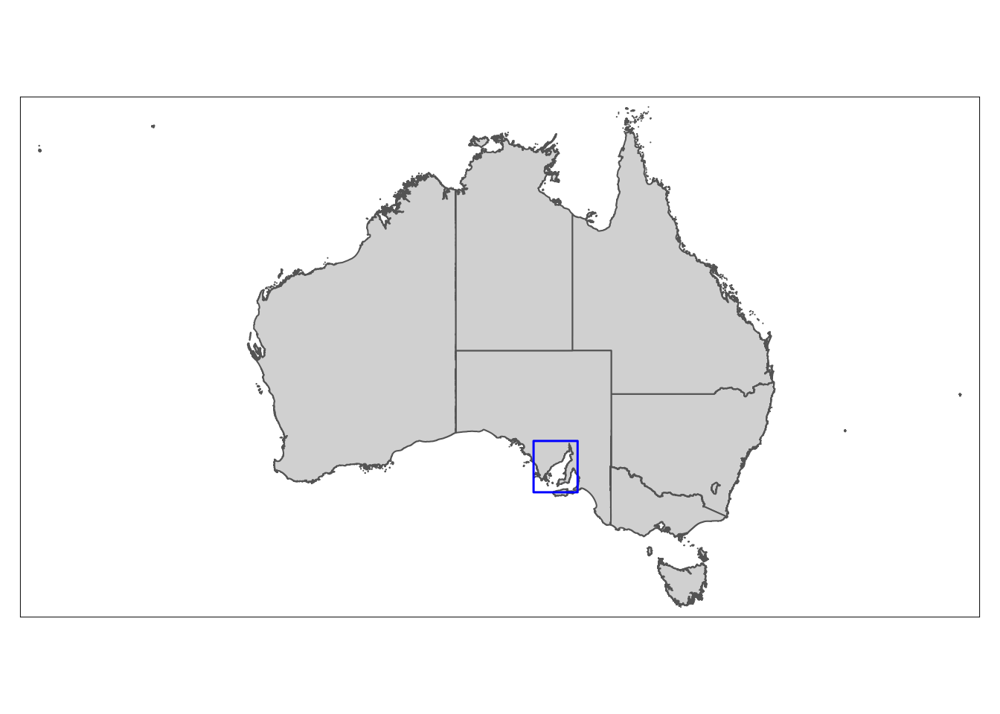
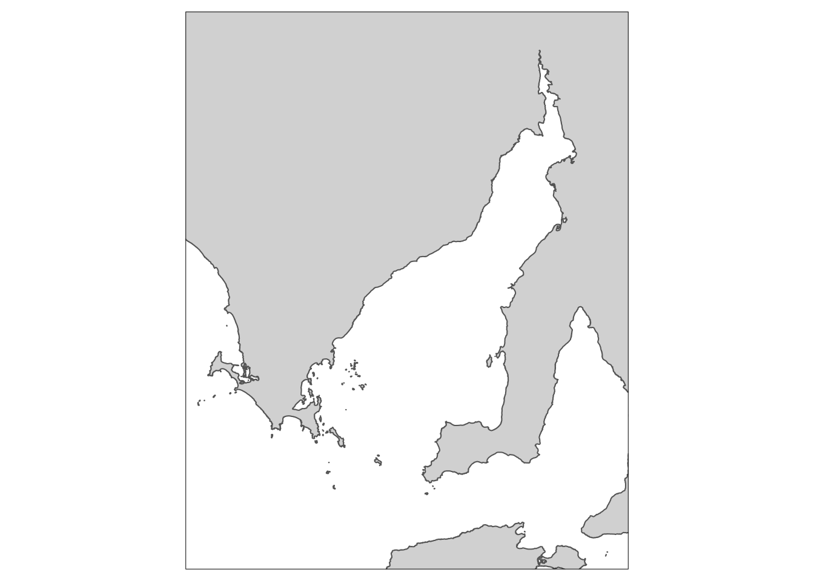
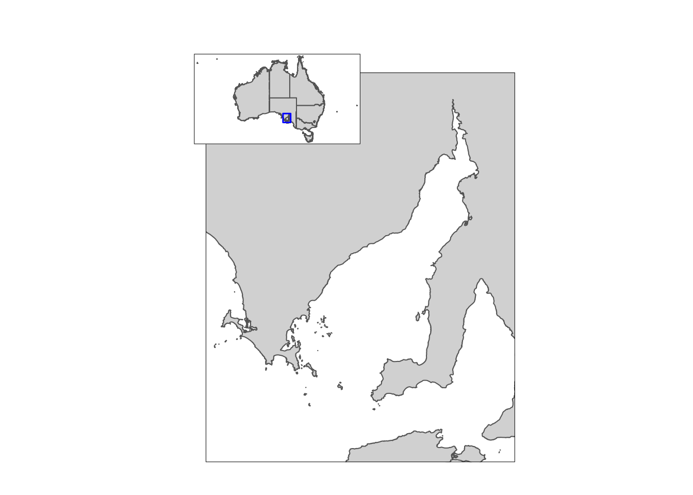
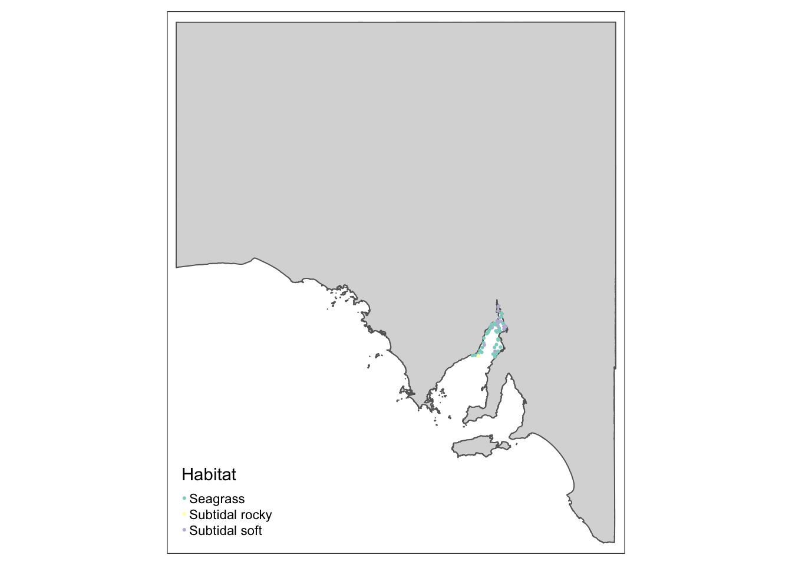
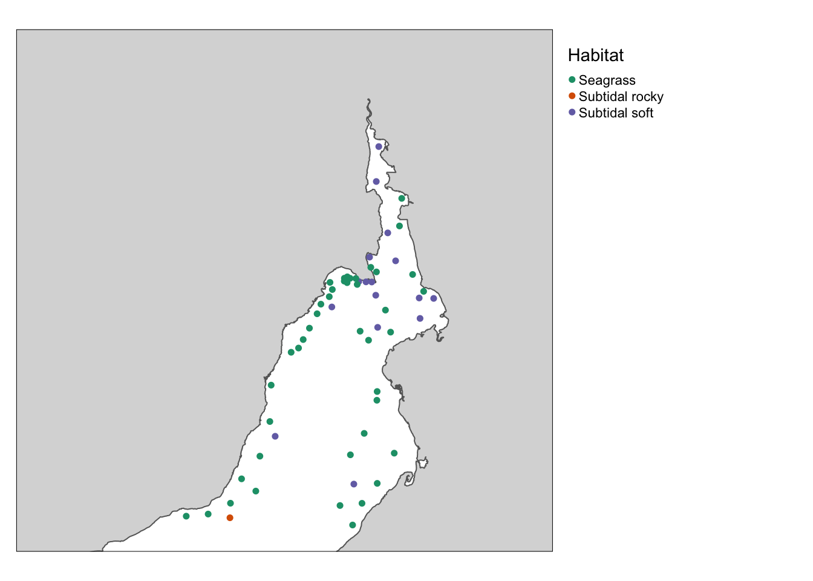

# Load packages
#install.packages('tidyverse', 'sf', 'tmap', 'tmaptools', 'gridextra', 'cowplot')
library(tidyverse)
library(sf)
library(tmap)
library(tmaptools)
library(gridExtra)
library(cowplot)
library(here)Creating inset maps using ‘tmap’
What you’ll learn in these notes
- How to produce inset maps using the tmap package
- How to overcome common issues with inset maps
Why use inset maps?
You’ve produced an incredible figure that does a great job of visually comuunicating your message. This figure may show the location of your study, the distribution of your habitat of interest, or the results from your experiment. How could you possibly make this figure any more clear or informative?
Inset maps can compliment your existing figures by adding clarification on study location, or by providing essential context that is missing from the figure alone. For example, imagine you have just completed a months worth of fieldwork in challenging conditions. You have worked harder than ever to ensure you sampled as many locations as possible. You then plot the (many) sampling locations on a map, but there is one cluster of overlapping points that do not clearly show how many samples are at that location, or what they are representing. You could use an inset map to zoom in on that area and increase the precision of the points..
A common use of inset maps is to make your study location more intuitive to a wider audience. If you’ve conducted your study in an estuary in South Australia, this region may be very familiar to the locals, but how would an international audience know exactly where this is? An inset map that shows the Australian continent with your estuary highlighted points an international audience to exactly where your research has taken place.
Lets run some code and see for ourselves!
Install and load the following packages:
And now to load the data:
# Import data
Aus <- st_read('STE_2016_AUST.gpkg')
Sa <- st_read('sa.gpkg')
sites <- st_read('sites.gpkg')We’ll start with our study in South Australia. We want to show where our study has taken place, so we produce a map of Spencer Gulf, a large South Australian inverse estuary.
# Map of South Australia
Sa_map <- tm_shape(Sa) +
tm_polygons()
Sa_map
Looks great! But someone who is not from Australia might not immediately know exactly where this is. If you’re presenting a talk, the last thing you want is a section of your audience trying to think about where your study is taking place, because if they are concentrating on that, they will be missing the vital information you are presenting.
So lets produce a map of Australia:
# Map of Australia
Aus_map <- tm_shape(Aus) +
tm_polygons()
Aus_map
Next, we will create a polygon that will show the audience exactly where Spencer Gulf is within Australia. We can use the ‘bb’ function from ‘tmaptools’ to do this:
# Bounding box for Spencer Gulf
bbox_sg <- bb(c(xmin = 135, ymin = -32.25, xmax = 138.4, ymax = -35.8))
# Convert to sf object
bbox_sg <- st_as_sfc(bbox_sg)Now we can add our polygon onto the map of Australia:
# Create inset map
insetmap <- tm_shape(Aus) +
tm_polygons() +
tm_shape(bbox_sg) +
tm_borders('blue', lwd = 1.5)
insetmap
Since we have defined the study area bounding box (the blue box), we can use the ‘bbox’ argument in ‘tm_shape’ to increase the precision of our main map:
# Map of study area
StudyArea_map <- tm_shape(Sa, bbox = bbox_sg) +
tm_polygons()
StudyArea_map
We will now start the process of combining our maps to make our final figure. The function we will use to create the figure requires our maps to be in a slightly different format. We need to convert them from tmap objects, into objects compatible with ggplot functions. Thankfully, this is very straight forward, though depending on the detail of the map, it may take a few minutes to run:
# Convert maps to tmap_grob objects
StudyArea_gg <- tmap_grob(StudyArea_map)insetmap_gg <- tmap_grob(insetmap)Now it’s finally time to produce the final figure.
Some important arguments to pay attention to are the ‘x’, ‘y’, and ‘scale’ arguments. These control the position and size of the map you are plotting within ‘draw_plot’ (you can also use ‘height’ and ‘width’ in place of ‘scale’ for greater control of the map size).
I won’t lie, these numbers make little sense to me. My best guess is that R is basing the positioning on a square grid, where the centre point is 0. So if ‘x’ is greater than 0, it’ll move the plot to the right, and less than 0 will move the plot to the left. Similarly, if ‘y’ is greater than 0, it’ll move the plot up, and less than 0 will move the plot down.
It always takes a bit of tinkering around with these numbers to get everything looking right. The important thing to remember is that these numbers range between -1 and 1 for ‘x’ and ‘y’, and 0 and 1 for scale. Only make small changes with the numbers, as the movement of the plot can be quite dramatic.
Included in the code below are a couple of functions called ‘dev.size’ and ‘dev.new’. These are important, but I will explain their purpose shortly.
# Plot window size
dev.size()[1] 7 5# 4.944444 3.055556
dev.new(width = 4.944444, height = 3.055556, noRStudioGD = T)# Study area with inset map
final_figure <-
ggdraw() +
draw_plot(StudyArea_gg, x = 0.02, y = 0.05,
width = 1, height = 0.82) +
draw_plot(insetmap_gg, x = -0.1, y = 0.3,
scale = 0.25)
final_figure
And that’s all it takes…or at least I wish it was. There is an important issue that should be raised, and it is this issue that is overcome using the ‘dev.size’ and ‘dev.new’ functions. It seems that the ‘x’ and ‘y’ numbers are linked to the actual size of your plot window in RStudio. Consequently, if you change the window size, or share your code with a collaborator, the results will not be reproduced as intended.
To overcome this, we used ‘dev.size’ to to find the dimensions of our plot window at the time we are viewing it, and then ‘dev.new’ to open up a new plotting window that matches these dimensions. These numbers should be changed once you have positioned your plot to your liking.
Given all the trouble you may have to go through to get the size and position right, you may be tempted to combine maps in Powerpoint or Publisher. However, you soon see the value in making reproducible code in R when you need to make changes to maps and do not need to continuously export the maps to these programs and rearrange them manually…this gets tedious after the first five times!
We will finish by quickly adding points that represent sample sites onto our map of South Australia, and then using an inset map to zoom in on this area to better visualise these points. Our points will also be coloured depending on the habitat present at that site.
Here is our map of South Australia with the sample sites overlaid.
# Map of South Australia with sites
pts_map <- tm_shape(Sa) +
tm_polygons() +
tm_shape(sites) +
tm_dots(col = 'Habitat')
pts_map
This map doesn’t really tell us much about our sampling, and we didn’t do all that fieldwork to not show it off!
Again, we need to set the bounding box for the area we want to zoom in on (this will be the inset map). Don’t forget to convert this to a polygon (see above) if you want to highlight the area in the main map.
# Bounding box for inset map
bbox_sites <- bb(c(xmin = 136.5, ymin = -32.25, xmax = 138.4, ymax = -33.8))# Inset map with sites
insetmap <- tm_shape(Sa, bbox = bbox_sites) +
tm_polygons() +
tm_shape(sites) +
tm_dots(col = 'Habitat',
size = 0.1,
palette = 'Dark2') +
tm_layout(legend.outside = T)
insetmap
Then the process is exactly the same as above when combining the maps. If you’d like to practice, see if you can adjust the Spencer Gulf polygon on the Australia map (or adding a new one onto the South Australia map) so it more accurately aligns with area showing the site points. Then combine that as an inset map with the site point map above to create your final figure.
Happy mapping!